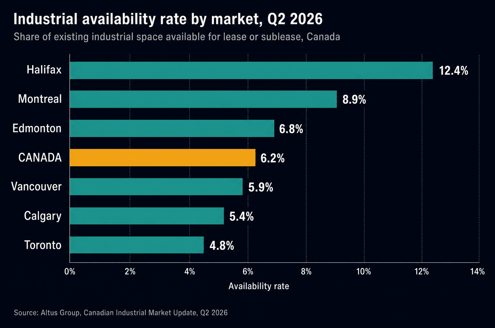
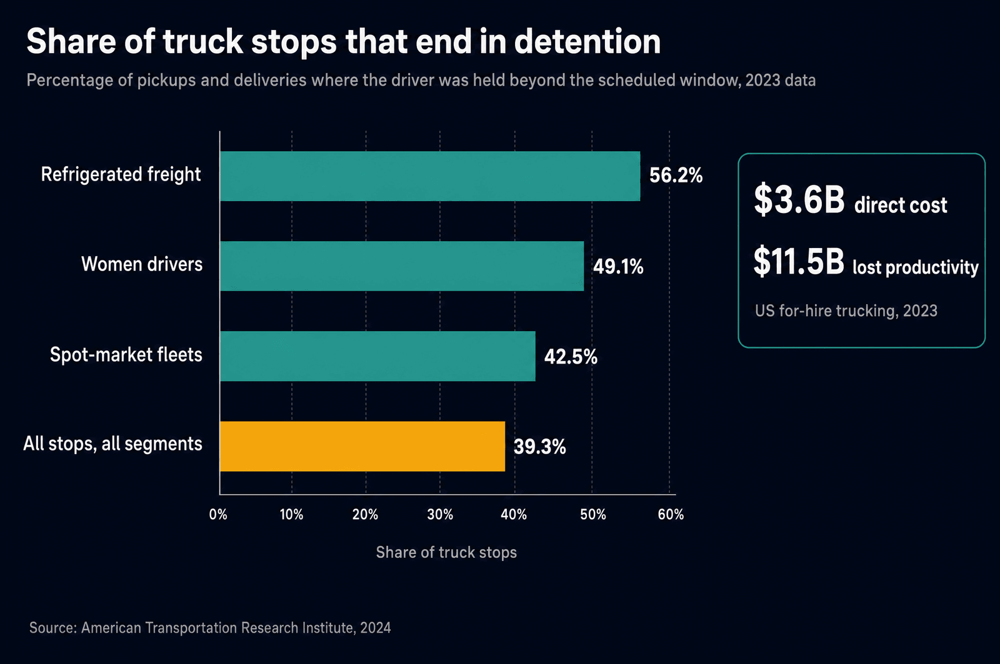
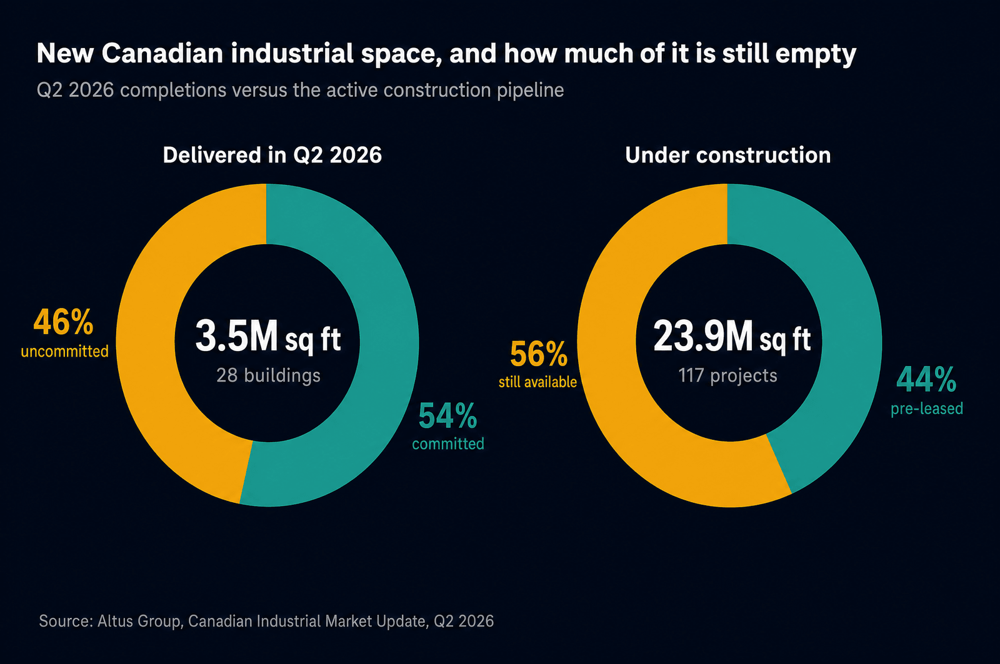

Ask a shipper what drives their freight cost and you will hear a familiar list: fuel, capacity, driver pay, the border. Almost nobody names the input that has quietly been moving all four of them this year, because it never appears on a rate confirmation. It is the price and availability of industrial space, the warehouses, distribution centres, and yards sitting at both ends of every load.
Freight does not move between addresses. It moves between buildings, and a building has a fixed number of dock doors, a fixed amount of racking, and a fixed number of people to unload. When space is plentiful, freight flows and nobody thinks about it. When space is scarce, every part of the trip gets slower, and the cost of that slowness lands on the shipper in ways a lane rate never captures. Canada's industrial property market loosened through 2024 and 2025 after a historic squeeze. In 2026 it started tightening again, and the freight consequences are already visible on our dispatch board.
The Market That Sets Your Freight Cost
Industrial real estate reports use two numbers that sound the same and are not. Vacancy is the share of space sitting physically empty right now. Availability is the share being marketed for lease or sublease, including space that is still occupied but whose tenant is trying to get out of it. Availability is the better early-warning signal, because it captures intent before it captures emptiness, and it is the number we watch.
Warehouse space is the shock absorber of a supply chain. Slack space is what lets a receiver take an early truck, hold a week of buffer inventory, or absorb a surge without turning trucks away. When availability falls, that slack disappears first. Receivers move to tighter appointment windows, cross-docking replaces storage, and anything that will not fit inside the building gets parked in the yard. The freight system does not fail dramatically when space gets tight. It just gets slower, one dock at a time, and slower is expensive.
What Q2 2026 Actually Says
Altus Group's second-quarter update puts Canada's industrial availability rate at 6.2 percent, up only 10 basis points year over year, alongside a fourth consecutive quarter of positive net absorption and average national net asking rents stabilizing in the $15.50 to $16.00 per square foot range. Read quickly, that looks like a flat market. Read by market, it is nothing of the kind.

Toronto sits at 4.8 percent, Calgary at 5.4 percent after a 110 basis point drop over the year, and Vancouver at 5.9 percent after tightening 30 basis points. Montreal moved the other way to 8.9 percent, and Halifax at 12.4 percent is an outlier that flatters the national average. In other words, the country's spare warehouse space is concentrated in the places where the fewest shippers need it. If your freight runs the Lower Mainland, the Calgary corridor, or the Greater Toronto Area, the market you actually operate in is tighter than the headline number suggests, and it has been getting tighter for two straight quarters.
When the Building Is Full, the Trailer Becomes the Warehouse
Here is the part that shows up on the freight side. A receiver who has run out of room does not stop receiving. They slow down. Unloading takes longer because there is nowhere to put the pallets, appointments get rationed because the doors are the bottleneck, and loaded trailers get asked to sit in the yard until space clears. At that point the trailer is doing the job of a warehouse, badly, with a driver's clock running inside it.
The American Transportation Research Institute quantified this better than anyone. In its 2024 study of 2023 data, drivers reported being detained in 39.3 percent of all stops, with refrigerated freight worst at 56.2 percent. Industry-wide detention exceeded 135 million hours in a single year, costing $3.6 billion in direct expense and $11.5 billion in lost productivity. And while 94.5 percent of fleets bill for detention, fewer than half of those invoices actually get paid.

That unpaid share is the important one, because it explains something shippers often find mysterious: why the quoted rate to one facility is higher than to another five kilometres away. Carriers that cannot reliably collect detention price the expected delay into the line haul instead. A dock with a reputation for holding trucks gets quoted with the dwell baked in, or it gets skipped. Capacity is not allocated by who pays the highest rate. It is allocated by who returns a truck to service fastest, which is the same capacity-versus-yield logic we walked through in the half-load paradox.
There is a safety dimension too, and it deserves more attention than it gets. ATRI's GPS analysis found that trucks which had been detained subsequently drove 14.6 percent faster on average than trucks that had not. A driver who loses two hours at a dock still has a delivery appointment, a reset to protect, and a household to get home to. The pressure has to go somewhere, and it goes into the right pedal. Every hour a full warehouse pushes onto a trailer is an hour the road eventually pays for.
"A tight space market does not announce itself with a shortage. It shows up as an extra ninety minutes at a dock, a rescheduled appointment, and a lane that quietly costs more than it did last year."
The Relief Being Built, and Who It Is For
New supply is the obvious answer, and some is arriving. Twenty-eight new industrial buildings delivered roughly 3.5 million square feet nationally in the second quarter, of which 46 percent was still uncommitted at completion. The active pipeline holds 117 projects and 23.9 million square feet, and 56 percent of that space is still available to lease.

Two cautions. First, uncommitted space is a lagging comfort: a building that completes empty in Montreal does nothing for a receiver who is out of room in Surrey. Second, industrial construction runs on multi-year timelines, so the pipeline showing up in 2027 was priced and permitted in a different market. Between now and then, the freight system absorbs the gap the way it always does, in yard time and appointment queues. Planning around that gap is a routing and scheduling problem more than a real estate one, which is the same discipline we described in optimizing freight routes.
Metro Vancouver: the Sharpest Version of the Squeeze
Keylink is based in Abbotsford, so the Lower Mainland version of this story is the one we live in. Metro Vancouver is boxed in by mountains, ocean, the agricultural land reserve, and the United States border, which means industrial land is not a policy dial that can simply be turned up. The region's long-running constraint is documented in Metro Vancouver's own Regional Industrial Lands Strategy, and the Q2 numbers show the market tightening again from an already low base.
Layer the port on top. Containers landing at Canada's largest port need somewhere nearby to be stripped, sorted, and staged, and when that space is short the pressure works backward into terminal dwell and rail. The Vancouver Fraser Port Authority publishes its own supply chain performance dashboards precisely because those handoffs are where time disappears. We wrote about the trucking side of that pressure in our look at Port of Vancouver congestion, and the underlying dynamic has not changed: a port is only as fast as the warehouses behind it.
A Shipper's Playbook for a Tight Space Market
You cannot build a warehouse before Friday. You can change how your freight interacts with the one you have, and most of the wins are unglamorous.
How Keylink Runs Against a Full Dock
We are a family-owned, BC-based full truckload carrier running our own fleet on Canada and US lanes, with offices in Abbotsford and Calgary. Running our own equipment rather than brokering every load is what lets us do the following consistently rather than occasionally.
Send us your lanes and your receiving windows. We will tell you where the time is going and quote freight that accounts for the real world, not the ideal one.
Get a Quote →Questions We Get Asked
What is the difference between industrial vacancy and availability?
Vacancy counts space that is physically empty today. Availability counts everything being marketed for lease or sublease, including space a tenant still occupies but wants to shed. Availability moves first, which is why it is the better leading indicator for anyone planning freight six months out. Canada's availability rate was 6.2 percent in Q2 2026.
Why would a warehouse shortage raise my freight cost if I already have a contracted rate?
Because rates are priced per truck per trip, and a truck stuck in a yard is not making trips. When a facility reliably holds trucks, carriers either bill detention, price the expected delay into the line haul at the next renewal, or quietly stop bidding the lane. Contracted rates protect you from market swings, not from your own dock's throughput.
When does detention start, and what is a normal amount of free time?
Free time runs from the driver's arrival at the scheduled appointment, and two hours is the most common allowance in Canadian truckload, though it is negotiable and should be written into your agreement rather than assumed. What matters more than the number is agreeing in advance on how arrival and departure are evidenced. Timestamped tracking data settles most disputes before they start.
Is a drop trailer program cheaper than paying detention?
Often, yes, when the alternative is a live unload that routinely runs long. A drop converts an unpredictable hourly charge into a known equipment commitment and frees the tractor to keep working. It stops paying off when trailers sit for days as overflow storage, because the carrier loses the asset and prices that loss back into your lane. Drop programs work when trailers cycle, not when they park.
Which Canadian markets are tightest right now?
On Q2 2026 availability, Toronto at 4.8 percent, Calgary at 5.4 percent, and Vancouver at 5.9 percent are the tight end, and Calgary and Vancouver both tightened over the year. Montreal at 8.9 percent and Halifax at 12.4 percent hold most of the national slack. Averages are misleading here, so plan against your own markets rather than the national figure.
Does the space squeeze affect cross-border freight differently?
Yes, because a cross-border trip has more sequential deadlines. Time lost at a warehouse can push a truck into a busier border window, past a customs broker's staffed hours, or into a driver's mandatory rest, and each of those compounds the next. On Canada to US lanes the practical defence is scheduling slack at the dock end, not heroics at the border.
Sources and Further Reading
- Altus Group, "Canadian Industrial Market Update, Q2 2026" (availability rates by market, rents, completions, construction pipeline).
- American Transportation Research Institute, "New Research Documents Substantial Financial and Safety Impacts from Truck Driver Detention", September 2024.
- CBRE Canada, "Canada Industrial Figures, Q2 2026".
- Metro Vancouver, "Regional Industrial Lands Strategy".
- Vancouver Fraser Port Authority, "Port insights: supply chain performance".
- Journal of Commerce, "Vancouver still dealing with extended rail container dwell times".
- Cushman & Wakefield, "Canada Industrial MarketBeat reports".